1.叉车作业前，应检查外观，加注燃料、润滑油和冷却水；
2.检查启动、运转及制动性能；
3.检查灯光、音响信号是否齐全有效；
4.叉车运行过程中，应检查压力、温度是否正常；
5.叉车运行后，还应检查外泄漏情况，并及时更换密封件；
6.电瓶叉车除应检查以上内容外，还应按电瓶车的有关检查内容，对电瓶叉车的电路进行检查。
1.起步前，观察四周，确认无妨碍行车安全的障碍后，先鸣笛，后起步；
2.气压制动的车辆，制动气压表读数须达到规定值才可起步；
3.叉车在载物起步时，驾驶员应先确认所载货物平稳可靠；
4.起步时，须缓慢平稳起步。
1.行驶时货叉底端距地面高度应保持300~400mm、门架须后倾；
2.行驶时不得将货叉升得太高。进出作业现场或行驶途中，要注意上空有无障碍物刮碰；载物行驶时，如货叉升得太高，还会增加叉车总体重心高度，影响叉车的稳定性；
3.卸货后，应先降落货叉至正常的行驶位置后再行驶；
4.转弯时，如附近有行人或车辆，应发出信号并禁止高速急转弯；高速急转弯，会导致车辆失去横向稳定而倾翻；
5.内燃叉车在下坡时，严禁熄火滑行；
6.非特殊情况，禁止载物行驶中急刹车；
7.载物行驶在超过7度和用高于一挡的速度上下坡时，非特殊情况不得使用制动器；
8.叉车在运行时要遵守厂内交通规则，必须与前面的车辆保持一定的安全距离；
9.叉车运行时，载荷必须处在不妨碍行驶的最低位置，门架要适当后倾，除堆垛或装车时，不得升高载荷；在搬运庞大物件时，物体挡住驾驶员的视线，此时应倒开叉车；
10.叉车由后轮控制转向，所以必须时刻注意车后的摆幅，避免初学者驾驶时，经常出现的转弯过急现象；
11.禁止在坡道上转弯，也不应横跨坡道行驶；
12.叉车载货下坡时，应倒退行驶，以防货物颠落。
1.叉载物品时，应按需调整两货叉间距，使两叉负荷均衡，不得偏斜，物品的一面应贴靠挡货架，叉载的重量应符合载荷中心曲线标志牌的规定；
2.载物高度不得遮挡驾驶员的视线；
3.在进行物品的装卸过程中，必须用制动器制动叉车；
4.货叉车接近或撤离物品时，车速应缓慢平稳，注意车轮不要碾压物品、木垫等，以免碾压物飞起伤人；
5.用货叉叉取货物时，货叉应尽可能深地叉入载荷下面，还要注意货叉尖不能碰到其它货物或物件；应采用最小的门架后倾来稳定载荷，以免载荷向后滑动；放下载荷时，可使门架小量前倾，以便于安放载荷和抽出货叉；
6.禁止高速叉取货物、和用叉头与坚硬物体碰撞；
7.叉车作业时，禁止人员站在货叉上；
8.叉车叉物作业，禁止人员站在货叉周围，以免货物倒塌伤人；
9.禁止用货叉举升人员从事高处作业，以免发生高处坠落事故；
10.不准用制动惯性溜放物品。
1 只有经过培训或者经允许的人员，才可以进行叉车操作。
2 驾驶车辆时应佩戴安全帽、防护眼镜并穿好安全鞋，禁止褒衣博带。
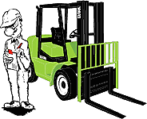
3 工作开始前要按照驾乘人员检查事项表，对叉车进行检查后再使用。
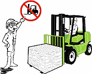
4 请不要在非经允许的场所开动叉车，必须遵守所有安全规则并熟悉警告牌。
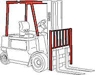
5 没有安装托物装置（LBR）或护顶装置的叉车不要启动。
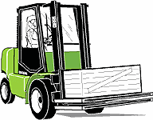
6 搬运当中货物靠后时，必须最大限度降低货叉，可以确保叉车的安全性及宽广的视野。
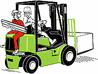
7 请不要用叉车载人，叉车不是用来载人，是用来载货的。
8 如果是未经认可的安全装置，无论任何人都不得进入其中，将其放在货叉上升降。
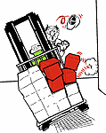
9 避免急出发、急启动、急转弯及突然间的方向转换，禁止突然加速，应总是根据周围环境进行叉车操作。
10 不得在手湿或穿湿鞋的情况下启动叉车，并且绝对不能用带有油的手操作任何控制装置，为避免手和脚滑落控制装置而引起事故。
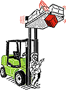
11 货叉上载有货物或者起升时下面不得站人或行走，货物掉落可能导致人员受伤或死亡。
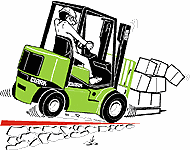
12 载着货物上斜坡时前进，下斜坡时后退。
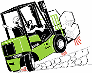
13 如果在斜坡上装载，不要转换方向，请直进上下。
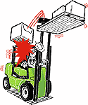
14 松散着装载货物，不能超过LBR的高度进行起升。
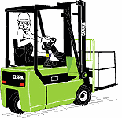
15 如果货物使视野受到限制，请不要前进驾驶，除上斜坡外，为了使视野宽阔，请后退行驶。
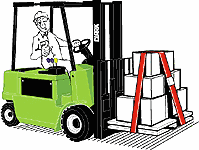
16 不得搬运或举升不安全的货物，总是适当的载物并把载物调整放至两叉子的上面。
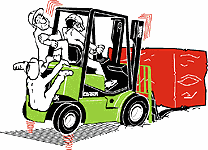
17 不得超过叉车的负载和平衡力，可以看贴在叉车上的额定负载进行确认，绝对不能超过标示的负载，超过负载可能导致翻车，引起伤害或叉车损伤。
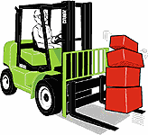
18 货物不是装载于两货叉上，即单货叉上的状态下请不要开动叉车，货物下面的货叉位置调整至最大限度，用心操作并小心检查安全性和平衡，请记住货物的坠落会导致伤害及损伤。
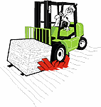
19 请遵守特别是已标示最大负重的地面，升降机最大负重、最大高度等所有的允许基准。
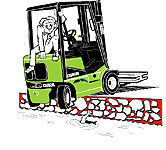
20 在装卸场或倾斜路边缘上请注意行驶，叉车可能会从边缘上掉下引起伤害或导致死亡，请保持与边缘的安全距离，地面滑时要特别注意。
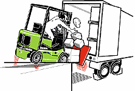
21 桥板如果承受不住叉车及货物的重量，请不要在其上方行驶，将桥板放至准确的位置，为了避免遛车，要用轫块将车辆固定住。
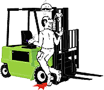
22 没回到驾驶座的状态下，请不要启动叉车，胳膊、头、腿一定要保持在驾驶室内。
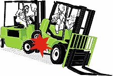
23 请不要接近其他叉车并启动，要时常确保可以使车辆安全静止充分的安全距离。
24 推或者牵引其他叉车时，请不要使用本人的叉车，如果叉车没有启动时，请联系维修公司。
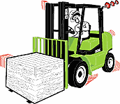
25 所有叉车驾驶员不能丧失控制力，还有一定要注意运行方向。
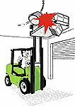
26 货物在升起的状态下不要启动叉车，可能会造成翻车或者给本人或其他人造成伤害，还可能导致死亡，举升货物或者承载货物时一定要注意头顶上的障碍物，装载时要注意坠落物。
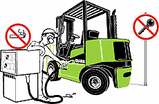
27 叉车加油要选在特定场所完成，加油时应注意关闭发动机，禁止吸烟及烟火，这一禁止事项当然也适用于液化气罐交替时，还有发动机再启动时不要忘记关闭燃料罐并把漏的燃料擦干净。
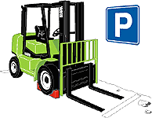
28 叉车要停在经允许的场所并把货叉完全降到地面，方向操纵杆要放在停车档上，拔出钥匙，为了避免遛车，用轫块轮胎固定住。
（资料来源：http://www.clarkmhc.com.cn/）